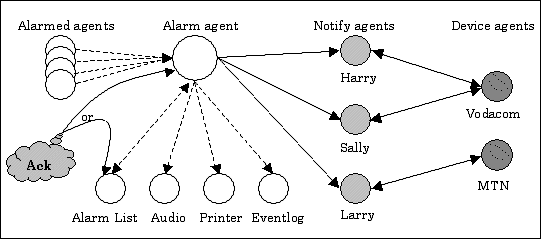

Note: By using the Email driver, Notify agents can also send email messages. For details, see Configuring Notify agents to send email messages.
Consider the scenario of a plant with an existing Adroit configuration.
The existing Adroit configuration must be extended to provide support for the routing of only certain important alarms to various personnel. The plant consists of four dams that are modeled using the four analog agents, dam_level_1, dam_level_2, dam_level_3 and dam_level_4.
Each of the analog agents are currently alarmed on the high and high-high alarm limits using route 2 of the alarm agent, dam_level_alarms. Route 2 sends alarms to an alarm list agent, dam_level_alarm_list, and to the local event log.
The high-high alarms for the analog agents, dam_level_1 and dam_level_2 are very important to Harry and Sally and they would like these alarms to be routed to their cellular phones when these alarms become active. Both Harry and Sally have cellular phones on the Vodacom network.
Larry is concerned about the high-high alarm of dam_level_1. He has a cellular phone on the MTN network. However, neither Harry, Sally nor Larry want the remaining plant alarms to be routed to their cellular phones, that is, the alarms for dam_level_3 and dam_level_4.
In order to access the cellular or pager network, install the user-defined protocol driver in the Drivers section of the Adroit setup program. Then add a device for each cellular network. Name these devices, for instance, VODACOM and MTN. Both devices will make use of a modem installed on the Agent Server computer.
Notice that each Pager device represents a cellular or pager service network, while each Notify agent represents a person to be notified.
Create three Notify agents to represent each person, Harry, Sally and Larry; namely HARRY, SALLY and LARRY. Edit each Notify agent and insert that person’s cellular-phone number in the field entitled "User Code". The cellular number required in this field is the number excluding the 082 or 083 network code.
The alarm can be transmitted the instant it occurs by checking Transmit an Alarm when it is raised. Each alarm routed to a Notify agent will be kept in a separate list of alarms for each Notify agent. An alarm will be removed from the list only when it has been cleared and acknowledged.
It is also possible to send the list periodically to keep people informed of alarms that have not been cleared or acknowledged. The format of the alarm record structure can also be specified as desired.
Scan the "rawValue" slot of the Notify agents using the relevant pager devices. HARRY.rawValue and SALLY.rawValue will be scanned using the VODACOM device. LARRY.rawValue will be scanned using the MTN device. Start each device. It is possible to test the device configuration by sending a message to each person. Simply set the "value" slot of each Notify agent to any string value and verify the message gets through to each cellular-phone.
Now modify the alarm routes for the alarm agent, dam_level_alarms. Edit the alarm agent and add a new route, route 3.
It is important to note that the new route includes the routing information of route 2 (the alarm list agent dam_level_alarm_list and the local event log), that is, the new route should be a superset of the old route. This ensures that the operation of the plant from an operators point of view is unaffected by adding in the cellular phone destinations.
When the operators acknowledge alarms in the manner that were practiced before, the acknowledgement will be sent to the additional cellular phone destinations. Add the Notify agents HARRY and SALLY to the ‘Output’ list of route 3.
The alarm routing configuration of the high-high alarms for the analog agents, dam_level_1 and dam_level_2, must be altered from route 2 to route 3.
To cater for Larry, edit the alarm agent, dam_level_alarm, and add a new route, route 4. Ensure that this route includes the alarm routing information of route 2. Add the Notify agent LARRY to the ‘Output’ list of route 4. Alter the alarm routing configuration for the high-high alarm of analog agent dam_level_1 from route 2 to route 4.
